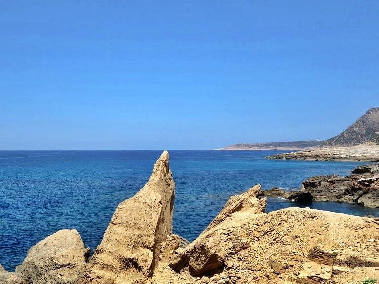
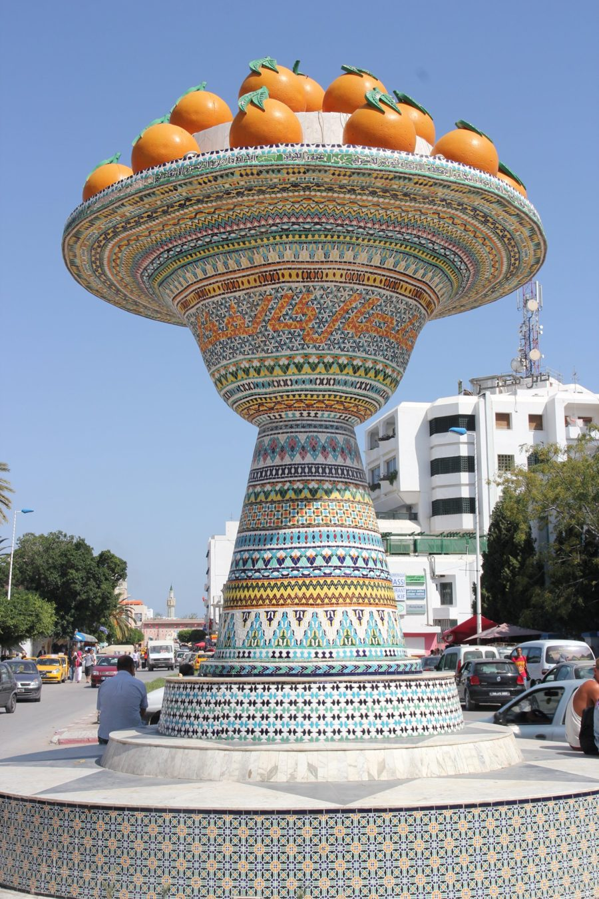
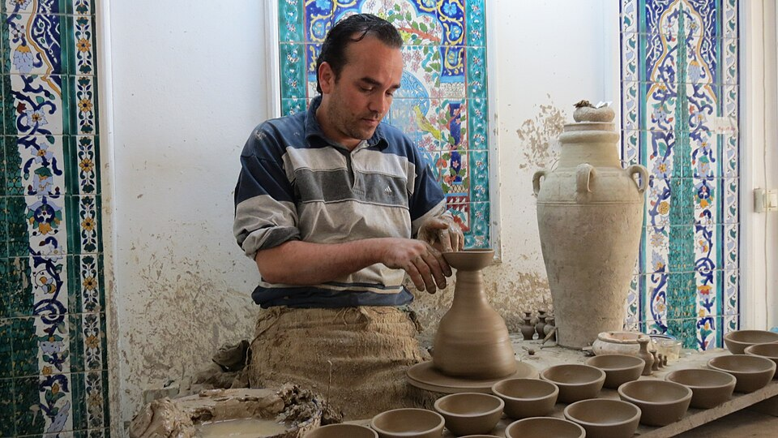
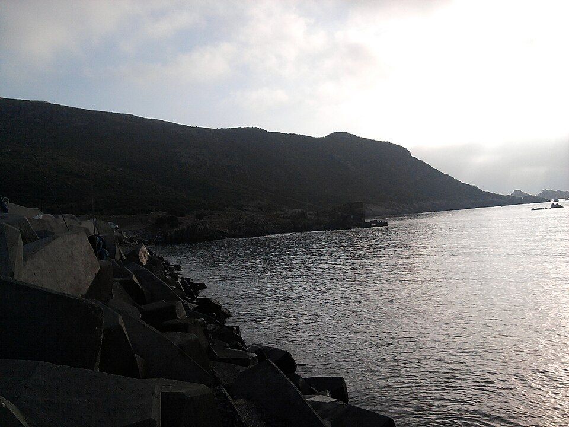
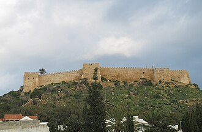

Explorez les richesses authentiques du Cap Bon
Cap Bon Explorer vous invite à découvrir le patrimoine, les savoir-faire et les paysages du Cap Bon. Parcourez nos expériences, choisissez une activité et préparez votre visite grâce à une simulation de réservation simple et transparente.
Découvrir les activitésQui sommes-nous ?
Cap Bon Explorer est une initiative dédiée à la mise en valeur du patrimoine culturel, artisanal et naturel de la péninsule du Cap Bon. Notre équipe passionnée sélectionne des expériences authentiques à Nabeul, Hammamet, Kélibia et Kerkouane pour offrir aux visiteurs un regard privilégié sur les traditions locales.
À travers ce portail interactif, nous facilitons la découverte des artisans potiers, des sites archéologiques puniques et des sentiers côtiers préservés. Notre objectif est de vous aider à organiser votre séjour en toute simplicité grâce à un catalogue clair et un outil de simulation transparent.
Galerie des activités

Nabeul, ville de céramique et d’agrumes

Un atelier de poterie à Nabeul

Kerkouane, cité punique face à la mer

La côte sauvage près d’El Haouaria
Nos activités à la une

Pourquoi découvrir le Cap Bon ?
- Un patrimoine historique millénaire : explorez des sites uniques classés comme la cité punique de Kerkouane et les médinas authentiques.
- Un artisanat vivant et reconnu : rencontrez les maîtres potiers et céramistes de Nabeul, capitale tunisienne de la poterie.
- Des paysages naturels préservés : profitez de plages sauvages, de criques cristallines à Kélibia et des sentiers du Djebel Abderrahmane.
- Une gastronomie et des marchés colorés : savourez les produits du terroir, les agrumes parfumés et l’ambiance conviviale des souks locaux.